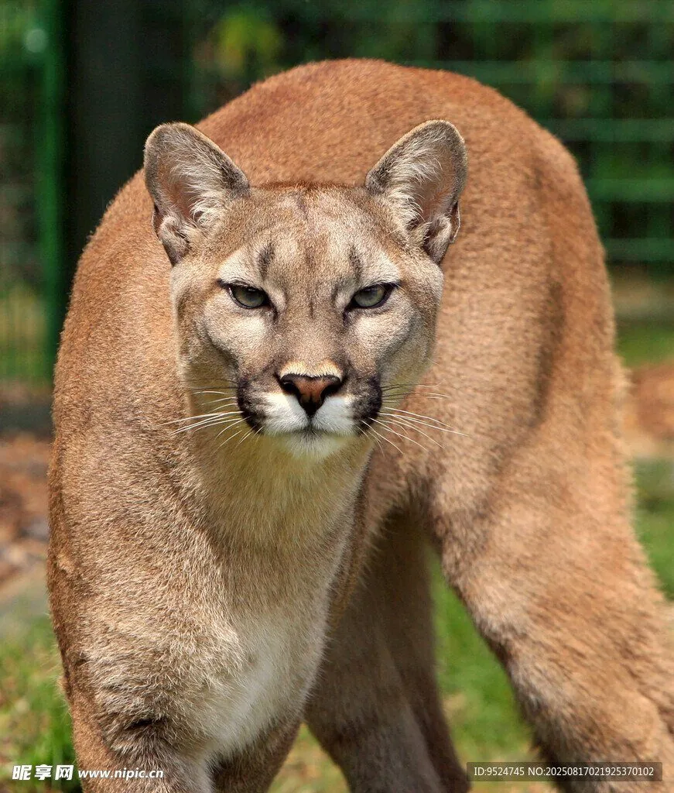

哺乳动物 · 动物界
美洲狮 Puma concolor

广泛分布于美洲大陆的猫科动物，体形修长、尾巴长而有力，跳跃能力很强，却不会像狮虎那样吼叫。
- 分类
- 门脊索动物门纲哺乳纲目食肉目科猫科属美洲金猫属
- 栖息环境
- 针叶林、热带雨林、草原、荒漠和高山，适应性极强
- 地理分布
- 北美洲西南部到南美洲南部，是美洲分布最广的猫科动物
- 保护级别
- IUCN 无危（LC）
物种志
美洲狮体长 1.0–1.9 米（含尾），肩高 0.6–0.8 米，体重 29–100 kg，雄性大于雌性。它的毛色从浅棕、灰褐到红褐不等，腹部和口鼻周围颜色较浅，幼兽身上有深色斑点，长大后逐渐消失；四肢修长，后肢尤为强壮，尾巴粗长。
美洲狮分布于北美和南美，从加拿大西南部到智利南部都能见到，栖息环境包括针叶林、热带雨林、草原、荒漠和高山，是美洲分布最广的猫科动物之一。它多在晨昏和夜间单独捕猎，食谱包括鹿、野猪、野兔、啮齿类和家畜，捕猎时以短距离爆发冲刺扑倒猎物。与狮、虎不同，美洲狮的舌骨结构使它不能吼叫，只能发出呼噜、尖叫和嘶嘶声。雌兽妊娠期约 90 天，每胎 1–4 仔。因栖息地破碎和人兽冲突，部分亚种已极度濒危。
形态与习性
- 食性鹿类、野猪、野兔、啮齿类，也捕食家畜
- 体长1.0–1.9 m（含尾），肩高 0.6–0.8 m
- 体重29–100 kg，雄性大于雌性
- 寿命野外约 8–13 年
- 繁殖妊娠期约 90 天，每胎 1–4 仔
- 跳跃可跃起约 5 m 高，短距离冲刺极快
- 分布从加拿大到智利南部，跨越多种生境
趣味知识
- 美洲狮不会吼叫，只能发出呼噜、尖叫和嘶嘶声。
- 幼兽身上带深色斑点，长大后斑点会逐渐消失。
- 它的后肢强壮，可跃起约 5 米高扑击猎物。
- 美洲狮是美洲分布最广的猫科动物，跨越多种生境。